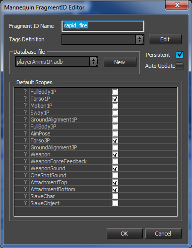

Обзор

FragmentID Редактор используется для редактирования имени fragmentID, а также свойств определения фрагмента, которые хранятся в Файл определения контроллера (xxxControllerDefs.xml).
Очень простой пример его использования см. Mannequin Урок по редактору 1. Настройка предварительного просмотра, фрагменты и сохранение.
Функции
- Имя фрагмента ID: имя этого fragmentID.
- Определение тегов: файл определения тега, содержащий Теги, специфичные для FragmentID (фрагтеги) для этого fragmentID.
- Редактировать: Редактировать выбранный файл определения тега в Mannequin Редактор определений тегов.
- Файл базы данных:
- Новый: Переместить этот фрагмент в новый подфайл ADB.
- Стойкий: заставляет действие продолжать воспроизведение, даже если воспроизводимый фрагмент не зациклен и закончился.
- Автоматическое обновление: Когда этот fragmentID установлен в игре, он постоянно проверяет, есть ли в наличии фрагмент, соответствующий текущему Mannequin TagState лучше, чем нынешний. Если это так, система предложит вам новый, более подходящий фрагмент. Полезно для основных действий на холостом ходу. Обычно используется вместе с флагом «Постоянный».
- Области по умолчанию: значение по умолчанию маска области назначен этому fragmentID. (он называется «по умолчанию», поскольку его может изменить программист)
- OK/Отмена: Применить/Отменить изменения.